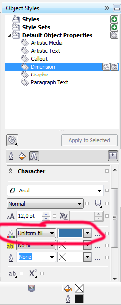

Размерные линии
Vanin / 16.05.2012, 19:10/00:41
Форум:
Не могу поменять цвет шрифта в размерных линиях в 16 Кореле, чтоб стоял
по умолчанию. Как поменять, так я знаю.
Не могу поменять цвет шрифта в размерных линиях в 16 Кореле, чтоб стоял
по умолчанию. Как поменять, так я знаю.

Я не знаю что такое "кащенко".(Это, что больница у вас такая ?)
И давайте без этих приколов, я далеко не юноша. Мне уже 56 лет. Корелом пользуюсь с 1997 года. 16-й установил два дня назад и вот эта проблемка.
Поясните как цвет текста меняется в букве.
До сих пор цвет текста я менял через "заливку" или выделив текст, в палитре выбираешь цвет и все. Здесь конкретный вопрос: по умолчанию стоит черный - показывает голубой.
посмотрите верхний скриншот
я даже обвел место где цвет текста меняется
Свойства форматирования размерных линий..... Это вы имеете в виду ?
Ну так я же писал, что я так и делаю.
Фигурный текст установил по умолчанию цвет - черный, а ставит все равно на размерных линиях - голубой. Как потом изменить этот голубой я знаю. Почему сразу не ставит черный ?
Сделал всё как описал mmgs и всё получилось...
После установки цвета линий и букв --все настройки сохранить "По умолчанию для нового документа"(там есть такая кнопочко) -- и будет вам счастье!
Chally,вообще-то я не чайник.
Про эту кнопочку знаю давно и как устанавливать цвета линий и шрифтов я тоже знаю. Вы прочтите внимательно,что я писал выше.
mmgs большое спасибо, что так терпеливо и подробно мне объяснили !!!!!!!
Внимательно еще раз посмотрел и все получилось. Просто закладку с буквой А я смотрел не в Object Styles.
Ванин, вам сделали одолжение - расжевали , а вы тут гарцуете...У вас то и проблемы были оттого что вы не сохраняли стили, дядя... Думаю на ваш пост адекватный совет --Купите ч/б монитор -- и ваши проблемы с цветным текстом исчезнут моментально...
а где ж интересно???
Смотрел на панели инструментов.
Страницы